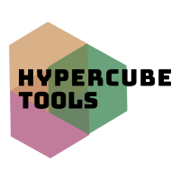

A place for helpful tools.
TimeSlip allows test cases to manipulate time by providing a concrete java.time.Clock implementation that will operate in a deterministic way, independent of the actual passage of time.
java.time.Clock
